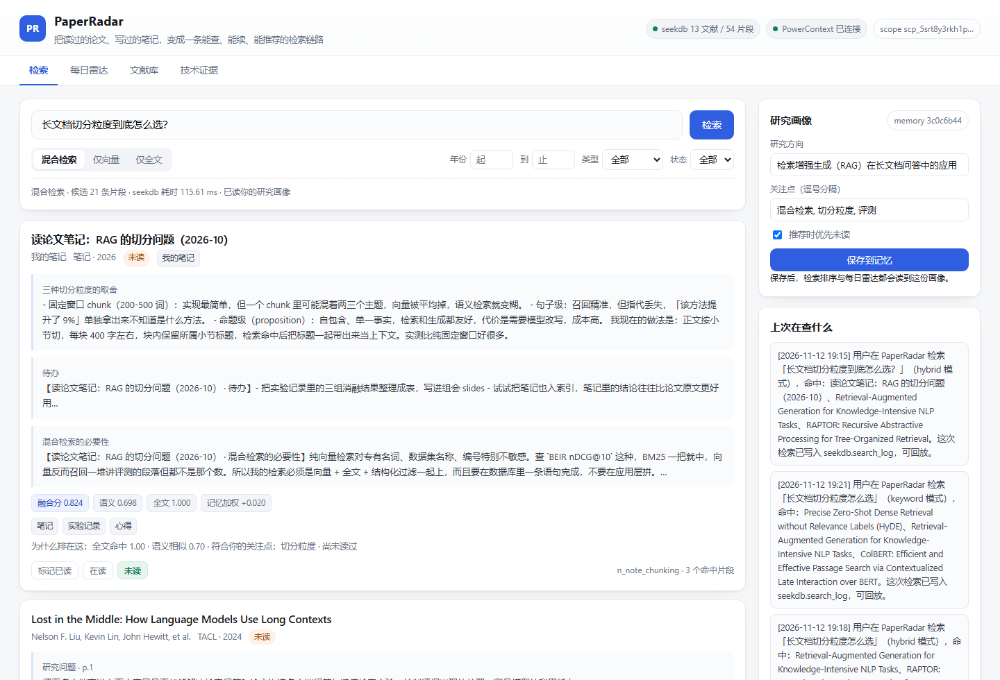
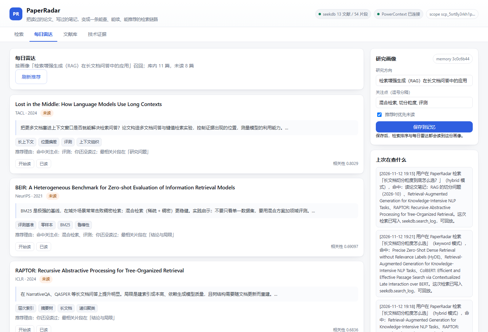
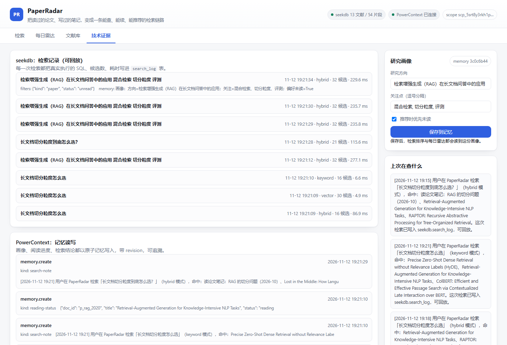

PaperRadar 面向一个真实痛点：文献散落在 PDF、笔记和聊天记录里，读完就忘、找不到出处、不知道读到哪里。 它用 seekdb 的混合检索把「查文献」变成一句话的事，用 PowerContext 把「你的研究方向和阅读进度」变成越用越准的记忆。
三个每天都在发生、却很少被认真解决的动作。
写综述时想起某个结论，全文搜索靠关键词碰运气，翻 PDF 要十几分钟。PaperRadar 返回的是片段级命中，带论文名、小节和页码。
你搜「切分」，文献里写的是「chunk 粒度」。纯关键词检索漏召回，纯向量检索又抓不准专有名词——所以要混合检索，而且要在数据库里一次完成。
文献该精读还是略读、这周该补哪篇，全靠记忆。PaperRadar 把阅读进度和研究画像写进 PowerContext，下次打开直接续上。
截图来自实际运行的系统。

混合检索：一句话提问，返回片段级出处；可切换「仅向量 / 仅全文」对比检索效果，每条结果解释「为什么排在这」。

每日雷达：根据记忆中的研究画像召回未读文献，并说明推荐理由与最相关片段的位置。

技术证据面板：每次检索下发给 seekdb 的真实 SQL、候选数与耗时全部落库可回放；PowerContext 的记忆读写带 revision 可追溯。
两个指定技术各司其职，且都能被核对。
| seekdb（资料层） | PowerContext（记忆层） | |
|---|---|---|
| 存什么 | 13 篇文献与笔记，54+ 个片段：内容、向量（VECTOR 384）、ngram 全文索引 | 研究画像、每篇文献的阅读进度、每次检索的结论，均为原子记忆 |
| 怎么用 | 原生 SQL（MySQL 协议）：MATCH ... AGAINST + cosine_distance + 条件过滤 + HNSW 近邻排序，单条语句完成混合检索 | HTTP API：atomic-memory 创建 / 按 ETag 替换 / 列表 / 检索，Scope 隔离 |
| 怎么核对 | search_log 表记录每次检索的 SQL 与耗时，可直接查询回放 | 记忆列表含 revision；界面「技术证据」页展示读写轨迹 |
全部组件本地运行，无需任何云服务或 API Key。完整步骤见仓库 docs/RUNBOOK.md。
seekdb --port 2881 # 1. 启动 seekdb powercontext server run --env-file .env # 2. 启动 PowerContext Server（基础模板即可） pip install -r requirements.txt # 3. 安装依赖 python scripts/bootstrap.py # 4. 建表 + 示例语料入库（54+ 片段） python -m uvicorn backend.main:app --port 8099 # 5. 启动服务 python scripts/smoke_test.py # 6. 端到端自检（10 项全 PASS）
团队私有仓库（已向评审开放）分支 2026-competition-ecosystem，项目资产位于 qoder/paperradar/。
→ 查看源码目录
三组可执行样例（混合检索对比 / 记忆读写复用 / 画像影响排序），见 docs/VERIFY.md。
需求拆解、方案确认、编码、调试、发布各环节的会话记录与 commit 对应，见 docs/QODER_LOG.md。